公式索引（12 个原始编号）
第 1 页Page 1PDF p.1
Proximal Policy Optimization Algorithms
近端策略优化算法
John Schulman, Filip Wolski, Prafulla Dhariwal, Alec Radford, Oleg Klimov OpenAI {joschu, filip, prafulla, alec, oleg}@openai.com
John Schulman, Filip Wolski, Prafulla Dhariwal, Alec Radford, Oleg Klimov OpenAI {joschu, filip, prafulla, alec, oleg}@openai.com
Abstract
摘要
We propose a new family of policy gradient methods for reinforcement learning, which alternate between sampling data through interaction with the environment, and optimizing a “surrogate” objective function using stochastic gradient ascent. Whereas standard policy gradient methods perform one gradient update per data sample, we propose a novel objective function that enables multiple epochs of minibatch updates. The new methods, which we call proximal policy optimization (PPO), have some of the benefits of trust region policy optimization (TRPO), but they are much simpler to implement, more general, and have better sample complexity (empirically). Our experiments test PPO on a collection of benchmark tasks, including simulated robotic locomotion and Atari game playing, and we show that PPO outperforms other online policy gradient methods, and overall strikes a favorable balance between sample complexity, simplicity, and wall-time.
我们提出了一类用于强化学习的新型策略梯度方法，交替执行通过与环境交互来采样数据，以及使用随机梯度上升来优化一个“替代”目标函数这两个过程。标准策略梯度方法对每个数据样本执行一次梯度更新，而我们提出的新目标函数支持进行多轮小批量更新。我们将这些新方法称为近端策略优化（PPO）。它们具备信赖域策略优化（TRPO）的部分优点，但实现起来简单得多，适用范围更广，而且在实验中表现出更好的样本复杂度。我们在一组基准任务上测试了 PPO，包括仿真机器人运动和 Atari 游戏。实验表明，PPO 优于其他在线策略梯度方法，并且总体上在样本复杂度、简洁性和实际运行时间之间取得了良好的平衡。
1 Introduction
1 引言
In recent years, several different approaches have been proposed for reinforcement learning with neural network function approximators. The leading contenders are deep \(Q\)-learning [Mni+15], “vanilla” policy gradient methods [Mni+16], and trust region / natural policy gradient methods [Sch+15b]. However, there is room for improvement in developing a method that is scalable (to large models and parallel implementations), data efficient, and robust (i.e., successful on a variety of problems without hyperparameter tuning). \(Q\)-learning (with function approximation) fails on many simple problems\({}^{1}\) and is poorly understood, vanilla policy gradient methods have poor data efficiency and robustness; and trust region policy optimization (TRPO) is relatively complicated, and is not compatible with architectures that include noise (such as dropout) or parameter sharing (between the policy and value function, or with auxiliary tasks).
近年来，研究者提出了多种使用神经网络函数逼近器的强化学习方法。其中最具竞争力的方法包括深度 \(Q\) 学习 [Mni+15]、“基本”策略梯度方法 [Mni+16]，以及信赖域／自然策略梯度方法 [Sch+15b]。然而，在开发兼具可扩展性（可扩展至大型模型和并行实现）、高数据效率和鲁棒性（即无需调节超参数便能在多种问题上取得成功）的方法方面，仍有改进空间。采用函数逼近的 \(Q\) 学习在许多简单问题上都会失败\({}^{1}\)，而且人们对其理解仍不充分；基本策略梯度方法的数据效率和鲁棒性较差；信赖域策略优化（TRPO）则相对复杂，并且不兼容包含噪声（如 dropout）或参数共享（策略与价值函数之间，或与辅助任务之间共享参数）的架构。
This paper seeks to improve the current state of affairs by introducing an algorithm that attains the data efficiency and reliable performance of TRPO, while using only first-order optimization. We propose a novel objective with clipped probability ratios, which forms a pessimistic estimate (i.e., lower bound) of the performance of the policy. To optimize policies, we alternate between sampling data from the policy and performing several epochs of optimization on the sampled data.
本文旨在通过引入一种仅使用一阶优化、却能达到 TRPO 的数据效率和可靠性能的算法来改善现状。我们提出了一种采用裁剪概率比的新目标，它构成了对策略性能的悲观估计（即下界）。为了优化策略，我们交替执行依据策略采样数据，以及在所采样的数据上进行若干轮优化这两个过程。
Our experiments compare the performance of various different versions of the surrogate objective, and find that the version with the clipped probability ratios performs best. We also compare PPO to several previous algorithms from the literature. On continuous control tasks, it performs better than the algorithms we compare against. On Atari, it performs significantly better (in terms of sample complexity) than A2C and similarly to ACER though it is much simpler.
我们的实验比较了替代目标的多个不同版本的性能，发现采用裁剪概率比的版本表现最佳。我们还将 PPO 与已有文献中的若干算法进行了比较。在连续控制任务上，PPO 的表现优于参与比较的其他算法。在 Atari 游戏上，PPO 在样本复杂度方面显著优于 A2C，与 ACER 表现相近，但比 ACER 简单得多。
\({}^{1}\)While DQN works well on game environments like the Arcade Learning Environment [Bel+15] with discrete action spaces, it has not been demonstrated to perform well on continuous control benchmarks such as those in OpenAI Gym [Bro+16] and described by Duan et al. [Dua+16].
\({}^{1}\)尽管 DQN 在 Arcade Learning Environment [Bel+15] 等具有离散动作空间的游戏环境中表现良好，但尚未有证据表明它在连续控制基准任务上同样表现良好，例如 OpenAI Gym [Bro+16] 中的任务，以及 Duan 等人 [Dua+16] 所描述的任务。
展开第 1 页原版整页（含全部图表、公式与页眉页脚）
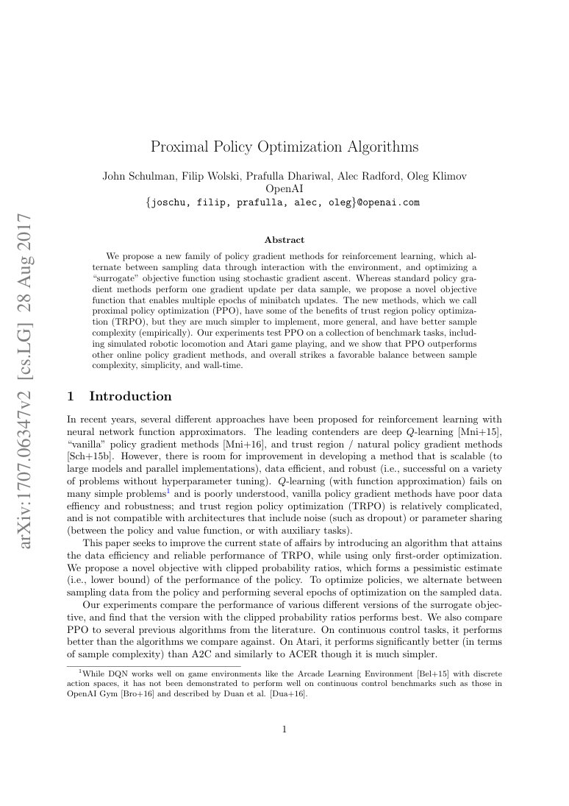
第 2 页Page 2PDF p.2
2 Background: Policy Optimization
2 背景：策略优化
2.1 Policy Gradient Methods
2.1 策略梯度方法
Policy gradient methods work by computing an estimator of the policy gradient and plugging it into a stochastic gradient ascent algorithm. The most commonly used gradient estimator has the form
策略梯度方法首先计算策略梯度的估计量，再将其用于随机梯度上升算法。最常用的梯度估计量具有如下形式
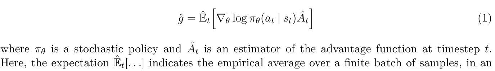
where \(\pi_\theta\) is a stochastic policy and \(\hat{A}_t\) is an estimator of the advantage function at timestep \(t\). Here, the expectation \(\hat{\mathbb{E}}_t[\ldots]\) indicates the empirical average over a finite batch of samples, in an algorithm that alternates between sampling and optimization. Implementations that use automatic differentiation software work by constructing an objective function whose gradient is the policy gradient estimator; the estimator \(\hat{g}\) is obtained by differentiating the objective
其中，\(\pi_\theta\) 是随机策略，\(\hat{A}_t\) 是时间步 \(t\) 处优势函数的估计量。这里，在交替进行采样与优化的算法中，期望符号 \(\hat{\mathbb{E}}_t[\ldots]\) 表示对一批有限样本求经验平均。使用自动微分软件的实现方式是构造一个目标函数，使其梯度恰好为策略梯度估计量；对以下目标函数求导即可得到估计量 \(\hat{g}\)
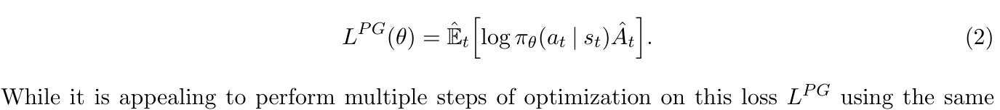
While it is appealing to perform multiple steps of optimization on this loss \(L^{PG}\) using the same trajectory, doing so is not well-justified, and empirically it often leads to destructively large policy updates (see Section 6.1; results are not shown but were similar or worse than the “no clipping or penalty” setting).
尽管使用同一条轨迹对这一损失 \(L^{PG}\) 进行多步优化很有吸引力，但这种做法缺乏充分依据，而且实验表明，它往往会导致幅度大到具有破坏性的策略更新（见第 6.1 节；此处未展示结果，但其表现与“不使用裁剪或惩罚”的设置相近或更差）。
2.2 Trust Region Methods
2.2 信赖域方法
In TRPO [Sch+15b], an objective function (the “surrogate” objective) is maximized subject to a constraint on the size of the policy update. Specifically,
在 TRPO [Sch+15b] 中，目标函数（“替代”目标）在策略更新幅度受约束的条件下被最大化。具体而言，
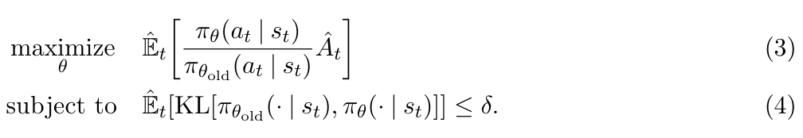
Here, \(\theta_{\mathrm{old}}\) is the vector of policy parameters before the update. This problem can efficiently be approximately solved using the conjugate gradient algorithm, after making a linear approximation to the objective and a quadratic approximation to the constraint.
这里，\(\theta_{\mathrm{old}}\) 是更新前的策略参数向量。对目标作线性近似、对约束作二次近似后，可以使用共轭梯度算法高效地近似求解这一问题。
The theory justifying TRPO actually suggests using a penalty instead of a constraint, i.e., solving the unconstrained optimization problem
实际上，为 TRPO 提供依据的理论建议使用惩罚项来代替约束，即求解如下无约束优化问题
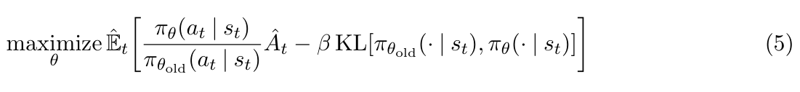
for some coefficient \(\beta\). This follows from the fact that a certain surrogate objective (which computes the max KL over states instead of the mean) forms a lower bound (i.e., a pessimistic bound) on the performance of the policy \(\pi\). TRPO uses a hard constraint rather than a penalty because it is hard to choose a single value of \(\beta\) that performs well across different problems—or even within a single problem, where the the characteristics change over the course of learning. Hence, to achieve our goal of a first-order algorithm that emulates the monotonic improvement of TRPO, experiments show that it is not sufficient to simply choose a fixed penalty coefficient \(\beta\) and optimize the penalized objective Equation (5) with SGD; additional modifications are required.
其中，\(\beta\) 为某个系数。这一做法的依据是：某个替代目标（它计算各状态上的最大 KL 散度，而非平均值）构成了策略 \(\pi\) 性能的下界（即悲观界）。TRPO 使用硬约束而非惩罚项，是因为很难选出一个在不同问题上都表现良好的固定 \(\beta\) 值；即使对于单个问题，由于其特征会在学习过程中发生变化，也很难做到这一点。因此，为了实现我们以一阶算法模拟 TRPO 单调改进特性的目标，实验表明，仅仅选取固定的惩罚系数 \(\beta\)，再使用 SGD 优化式 (5) 中带惩罚项的目标是不够的；还需要作进一步修改。
展开第 2 页原版整页（含全部图表、公式与页眉页脚）
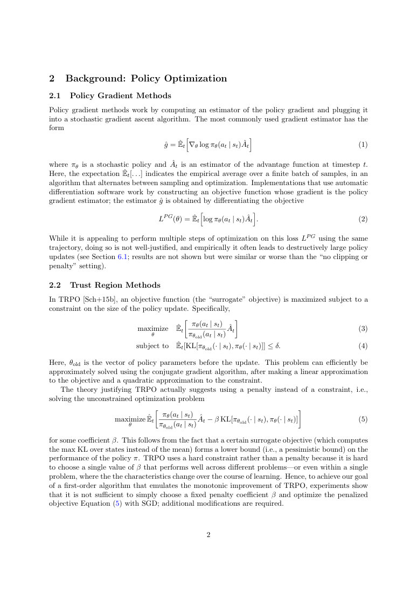
第 3 页Page 3PDF p.3
3 Clipped Surrogate Objective
3 裁剪替代目标
Let \(r_t(\theta)\) denote the probability ratio \(r_t(\theta)=\frac{\pi_\theta(a_t\mid s_t)}{\pi_{\theta_{\mathrm{old}}}(a_t\mid s_t)}\), so \(r(\theta_{\mathrm{old}})=1\). TRPO maximizes a “surrogate” objective
令 \(r_t(\theta)\) 表示概率比 \(r_t(\theta)=\frac{\pi_\theta(a_t\mid s_t)}{\pi_{\theta_{\mathrm{old}}}(a_t\mid s_t)}\)，因此 \(r(\theta_{\mathrm{old}})=1\)。TRPO 最大化一个“替代”目标
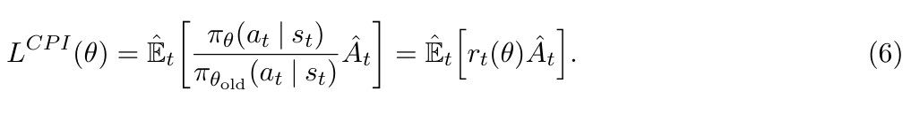
The superscript \(CPI\) refers to conservative policy iteration [KL02], where this objective was proposed. Without a constraint, maximization of \(L^{CPI}\) would lead to an excessively large policy update; hence, we now consider how to modify the objective, to penalize changes to the policy that move \(r_t(\theta)\) away from 1.
上标 \(CPI\) 指保守策略迭代 [KL02]，该目标最初在这项工作中提出。如果没有约束，最大化 \(L^{CPI}\) 会导致策略更新幅度过大；因此，我们现在考虑如何修改目标，以惩罚使 \(r_t(\theta)\) 偏离 1 的策略变化。
The main objective we propose is the following:
我们提出的主要目标如下：
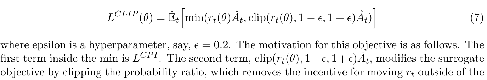
where epsilon is a hyperparameter, say, \(\epsilon=0.2\). The motivation for this objective is as follows. The first term inside the min is \(L^{CPI}\). The second term, \(\operatorname{clip}(r_t(\theta),1-\epsilon,1+\epsilon)\hat{A}_t\), modifies the surrogate objective by clipping the probability ratio, which removes the incentive for moving \(r_t\) outside of the interval \([1-\epsilon,1+\epsilon]\). Finally, we take the minimum of the clipped and unclipped objective, so the final objective is a lower bound (i.e., a pessimistic bound) on the unclipped objective. With this scheme, we only ignore the change in probability ratio when it would make the objective improve, and we include it when it makes the objective worse. Note that \(L^{CLIP}(\theta)=L^{CPI}(\theta)\) to first order around \(\theta_{\mathrm{old}}\) (i.e., where \(r=1\)), however, they become different as \(\theta\) moves away from \(\theta_{\mathrm{old}}\). Figure 1 plots a single term (i.e., a single \(t\)) in \(L^{CLIP}\); note that the probability ratio \(r\) is clipped at \(1-\epsilon\) or \(1+\epsilon\) depending on whether the advantage is positive or negative.
其中，epsilon 是一个超参数，例如可取 \(\epsilon=0.2\)。这一目标的动机如下。min 内的第一项是 \(L^{CPI}\)。第二项 \(\operatorname{clip}(r_t(\theta),1-\epsilon,1+\epsilon)\hat{A}_t\) 通过裁剪概率比来修改替代目标，从而消除将 \(r_t\) 移至区间 \([1-\epsilon,1+\epsilon]\) 之外的激励。最后，我们取裁剪目标与未裁剪目标的最小值，因此最终目标是未裁剪目标的一个下界（即悲观界）。采用这一方案时，只有当概率比的变化会使目标改善时，我们才忽略该变化；当它使目标变差时，则将其计入。注意，在 \(\theta_{\mathrm{old}}\) 附近（即 \(r=1\) 处），\(L^{CLIP}(\theta)=L^{CPI}(\theta)\) 在一阶近似下成立；然而，随着 \(\theta\) 远离 \(\theta_{\mathrm{old}}\)，两者会变得不同。图 1 绘出了 \(L^{CLIP}\) 中的单个项（即单个 \(t\)）；注意，概率比 \(r\) 在 \(1-\epsilon\) 或 \(1+\epsilon\) 处被裁剪，具体取决于优势为正还是为负。
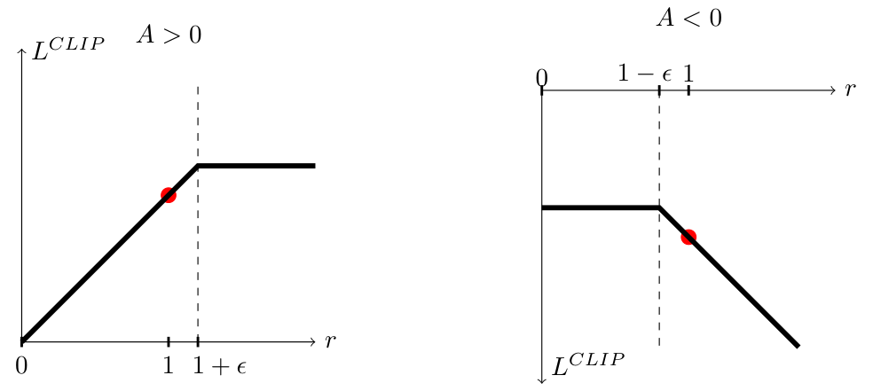
Figure 1: Plots showing one term (i.e., a single timestep) of the surrogate function \(L^{CLIP}\) as a function of the probability ratio \(r\), for positive advantages (left) and negative advantages (right). The red circle on each plot shows the starting point for the optimization, i.e., \(r=1\). Note that \(L^{CLIP}\) sums many of these terms.
图 1：优势为正（左）和优势为负（右）时，替代函数 \(L^{CLIP}\) 中的一个项（即单个时间步对应的项）随概率比 \(r\) 变化的曲线。每幅图中的红色圆点表示优化的起点，即 \(r=1\)。注意，\(L^{CLIP}\) 是许多这样的项之和。
Figure 2 provides another source of intuition about the surrogate objective \(L^{CLIP}\). It shows how several objectives vary as we interpolate along the policy update direction, obtained by proximal policy optimization (the algorithm we will introduce shortly) on a continuous control problem. We can see that \(L^{CLIP}\) is a lower bound on \(L^{CPI}\), with a penalty for having too large of a policy update.
图 2 从另一个角度提供了对替代目标 \(L^{CLIP}\) 的直观理解。它展示了沿策略更新方向进行插值时，几个目标如何变化；该更新方向是在一个连续控制问题上通过近端策略优化（即我们即将介绍的算法）得到的。可以看到，\(L^{CLIP}\) 是 \(L^{CPI}\) 的一个下界，并对幅度过大的策略更新施加惩罚。
展开第 3 页原版整页（含全部图表、公式与页眉页脚）
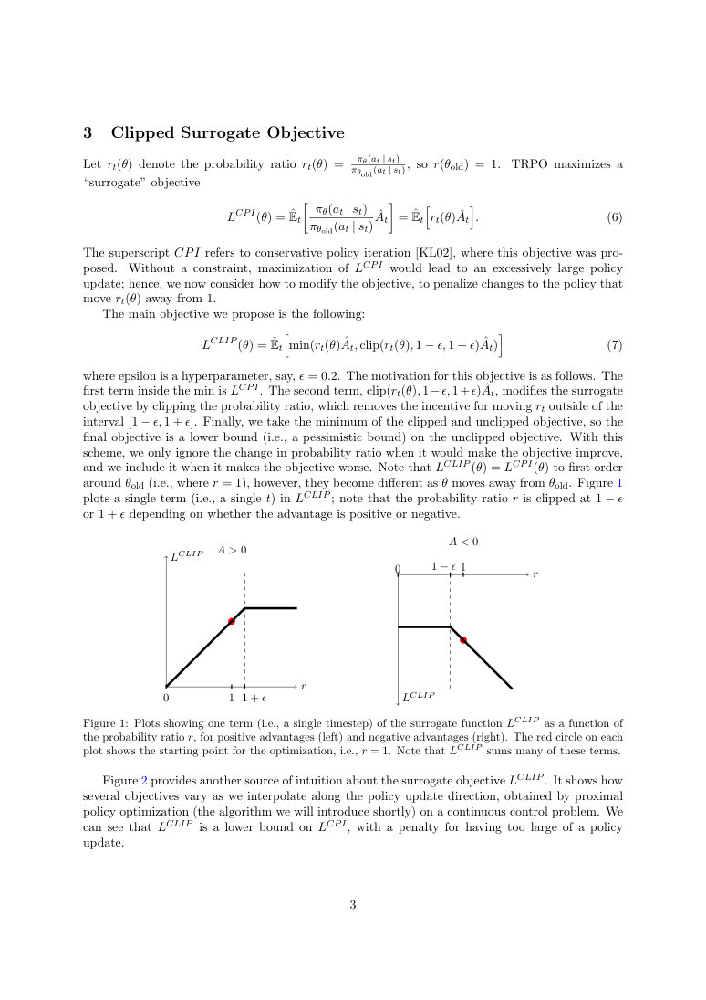
第 4 页Page 4PDF p.4
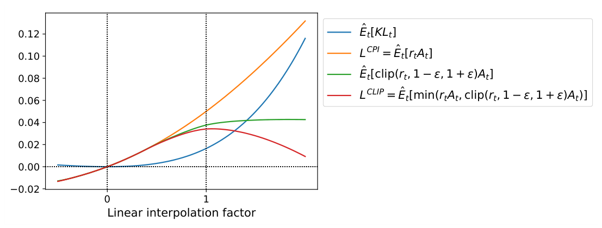
Figure 2: Surrogate objectives, as we interpolate between the initial policy parameter \(\theta_{\mathrm{old}}\), and the updated policy parameter, which we compute after one iteration of PPO. The updated policy has a KL divergence of about 0.02 from the initial policy, and this is the point at which \(L^{CLIP}\) is maximal. This plot corresponds to the first policy update on the Hopper-v1 problem, using hyperparameters provided in Section 6.1.
图 2：在初始策略参数 \(\theta_{\mathrm{old}}\) 与经过一次 PPO 迭代计算得到的更新后策略参数之间进行插值时，各替代目标的变化。更新后策略与初始策略之间的 KL 散度约为 0.02，且 \(L^{CLIP}\) 在这一点达到最大值。该图对应于 Hopper-v1 问题上的第一次策略更新，所用超参数见第 6.1 节。
4 Adaptive KL Penalty Coefficient
4 自适应 KL 惩罚系数
Another approach, which can be used as an alternative to the clipped surrogate objective, or in addition to it, is to use a penalty on KL divergence, and to adapt the penalty coefficient so that we achieve some target value of the KL divergence \(d_{\mathrm{targ}}\) each policy update. In our experiments, we found that the KL penalty performed worse than the clipped surrogate objective, however, we’ve included it here because it’s an important baseline.
另一种方法是对 KL 散度施加惩罚，并自适应地调整惩罚系数，使每次策略更新时的 KL 散度达到某个目标值 \(d_{\mathrm{targ}}\)。这种方法既可以替代裁剪替代目标，也可以与其结合使用。在实验中，我们发现 KL 惩罚的表现不如裁剪替代目标，但由于它是一种重要的基线方法，我们仍将其纳入本文。
In the simplest instantiation of this algorithm, we perform the following steps in each policy update:
在该算法最简单的实现形式中，我们在每次策略更新时执行以下步骤：
• Using several epochs of minibatch SGD, optimize the KL-penalized objective
• 采用若干轮小批量随机梯度下降（SGD），优化带 KL 惩罚的目标
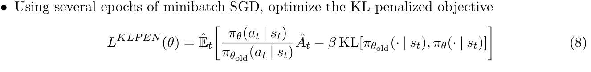
• Compute \(d=\hat{\mathbb{E}}_t[\mathrm{KL}[\pi_{\theta_{\mathrm{old}}}(\cdot\mid s_t),\pi_\theta(\cdot\mid s_t)]]\)
• 计算 \(d=\hat{\mathbb{E}}_t[\mathrm{KL}[\pi_{\theta_{\mathrm{old}}}(\cdot\mid s_t),\pi_\theta(\cdot\mid s_t)]]\)
– If \(d<d_{\mathrm{targ}}/1.5\), \(\beta\leftarrow\beta/2\)
– 若 \(d<d_{\mathrm{targ}}/1.5\)，则 \(\beta\leftarrow\beta/2\)
– If \(d>d_{\mathrm{targ}}\times1.5\), \(\beta\leftarrow\beta\times2\)
– 若 \(d>d_{\mathrm{targ}}\times1.5\)，则 \(\beta\leftarrow\beta\times2\)
The updated \(\beta\) is used for the next policy update. With this scheme, we occasionally see policy updates where the KL divergence is significantly different from \(d_{\mathrm{targ}}\), however, these are rare, and \(\beta\) quickly adjusts. The parameters 1.5 and 2 above are chosen heuristically, but the algorithm is not very sensitive to them. The initial value of \(\beta\) is another hyperparameter but is not important in practice because the algorithm quickly adjusts it.
更新后的 \(\beta\) 用于下一次策略更新。采用这一方案时，我们偶尔会观察到某次策略更新的 KL 散度与 \(d_{\mathrm{targ}}\) 存在显著差异，但这种情况很少发生，而且 \(\beta\) 会迅速调整。上述参数 1.5 和 2 是凭经验选取的，不过算法对它们并不十分敏感。\(\beta\) 的初始值是另一个超参数，但它在实践中并不重要，因为算法会迅速对其进行调整。
5 Algorithm
5 算法
The surrogate losses from the previous sections can be computed and differentiated with a minor change to a typical policy gradient implementation. For implementations that use automatic differentation, one simply constructs the loss \(L^{CLIP}\) or \(L^{KLPEN}\) instead of \(L^{PG}\), and one performs multiple steps of stochastic gradient ascent on this objective.
只需对典型的策略梯度实现稍作修改，就可以计算前几节中的替代损失并对其求导。对于使用自动微分的实现，只需构造损失 \(L^{CLIP}\) 或 \(L^{KLPEN}\) 来替代 \(L^{PG}\)，然后对这一目标执行多步随机梯度上升。
Most techniques for computing variance-reduced advantage-function estimators make use a learned state-value function \(V(s)\); for example, generalized advantage estimation [Sch+15a], or the
大多数用于计算低方差优势函数估计量的技术都会使用一个学习得到的状态价值函数 \(V(s)\)；例如，广义优势估计 [Sch+15a]，或
展开第 4 页原版整页（含全部图表、公式与页眉页脚）
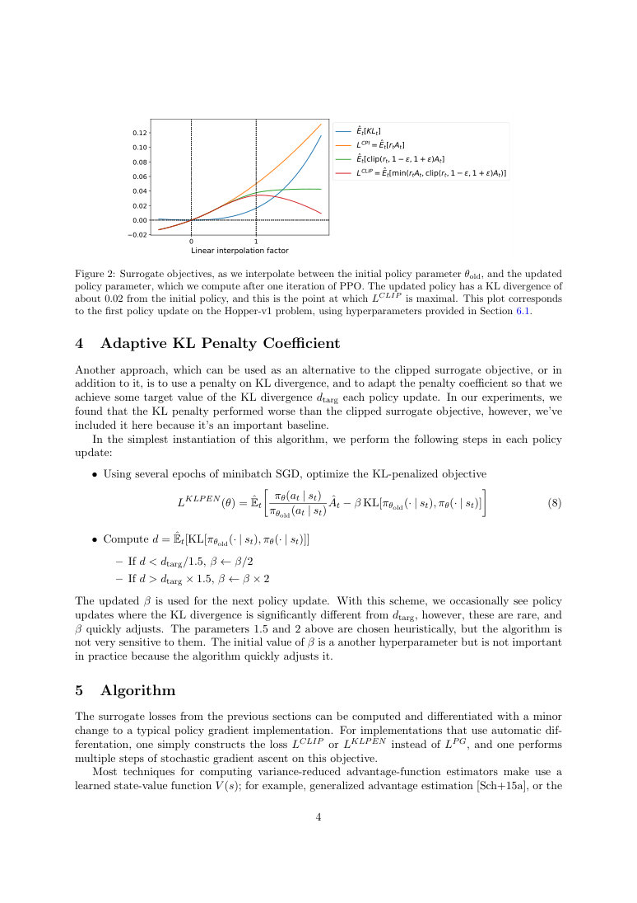
第 5 页Page 5PDF p.5
finite-horizon estimators in [Mni+16]. If using a neural network architecture that shares parameters between the policy and value function, we must use a loss function that combines the policy surrogate and a value function error term. This objective can further be augmented by adding an entropy bonus to ensure sufficient exploration, as suggested in past work [Wil92; Mni+16]. Combining these terms, we obtain the following objective, which is (approximately) maximized each iteration:
[Mni+16] 中的有限时域估计器。如果采用策略与价值函数共享参数的神经网络架构，就必须使用将策略替代目标与价值函数误差项相结合的损失函数。按照以往工作 [Wil92; Mni+16] 的建议，还可以在这一目标中加入熵奖励，以确保充分探索。将这些项结合起来，便得到以下在每次迭代中被（近似）最大化的目标：
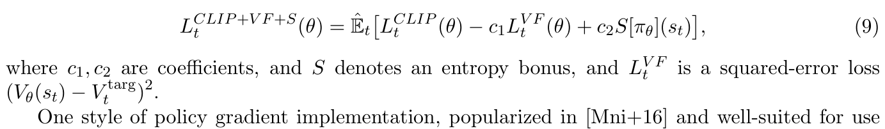
where \(c_1, c_2\) are coefficients, and \(S\) denotes an entropy bonus, and \(L_t^{VF}\) is a squared-error loss \((V_\theta(s_t)-V_t^{\mathrm{targ}})^2\).
其中，\(c_1, c_2\) 为系数，\(S\) 表示熵奖励，\(L_t^{VF}\) 为平方误差损失 \((V_\theta(s_t)-V_t^{\mathrm{targ}})^2\)。
One style of policy gradient implementation, popularized in [Mni+16] and well-suited for use with recurrent neural networks, runs the policy for \(T\) timesteps (where \(T\) is much less than the episode length), and uses the collected samples for an update. This style requires an advantage estimator that does not look beyond timestep \(T\). The estimator used by [Mni+16] is
一种由 [Mni+16] 推广、且非常适合与循环神经网络配合使用的策略梯度实现方式，是先运行策略 \(T\) 个时间步（其中 \(T\) 远小于回合长度），再利用收集到的样本进行一次更新。这种方式要求优势估计器不使用时间步 \(T\) 之后的信息。[Mni+16] 使用的估计器为
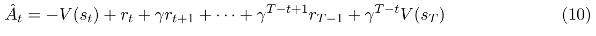
where \(t\) specifies the time index in \([0,T]\), within a given length-\(T\) trajectory segment. Generalizing this choice, we can use a truncated version of generalized advantage estimation, which reduces to Equation (10) when \(\lambda=1\):
其中，\(t\) 表示给定长度为 \(T\) 的轨迹片段内、取值范围为 \([0,T]\) 的时间索引。对这一选择进行推广，可以使用截断版本的广义优势估计；当 \(\lambda=1\) 时，它退化为式 (10)：
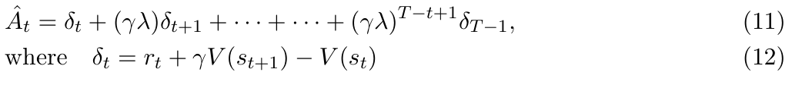
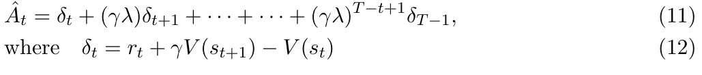
A proximal policy optimization (PPO) algorithm that uses fixed-length trajectory segments is shown below. Each iteration, each of \(N\) (parallel) actors collect \(T\) timesteps of data. Then we construct the surrogate loss on these \(NT\) timesteps of data, and optimize it with minibatch SGD (or usually for better performance, Adam [KB14]), for \(K\) epochs.
下文给出了一种使用固定长度轨迹片段的近端策略优化（PPO）算法。在每次迭代中，\(N\) 个（并行）行动者各自收集 \(T\) 个时间步的数据。随后，我们基于这 \(NT\) 个时间步的数据构造替代损失，并使用小批量 SGD（或使用通常性能更好的 Adam [KB14]）对其优化 \(K\) 轮。
Algorithm 1 PPO, Actor-Critic Style
算法 1 行动者–评论家形式的 PPO
for iteration=\(1,2,\ldots\) do
对于迭代次数 \(1,2,\ldots\)，执行
for actor=\(1,2,\ldots,N\) do Run policy \(\pi_{\theta_{\mathrm{old}}}\) in environment for \(T\) timesteps Compute advantage estimates \(\hat{A}_1,\ldots,\hat{A}_T\)
对于行动者 \(1,2,\ldots,N\)，执行 在环境中运行策略 \(\pi_{\theta_{\mathrm{old}}}\)，持续 \(T\) 个时间步 计算优势估计值 \(\hat{A}_1,\ldots,\hat{A}_T\)
end for
结束循环
Optimize surrogate \(L\) wrt \(\theta\), with \(K\) epochs and minibatch size \(M\leq NT\) \(\theta_{\mathrm{old}}\leftarrow\theta\)
对参数 \(\theta\) 优化替代目标 \(L\)，进行 \(K\) 轮优化，小批量大小为 \(M\leq NT\) \(\theta_{\mathrm{old}}\leftarrow\theta\)
end for
结束循环
6 Experiments
6 实验
6.1 Comparison of Surrogate Objectives
6.1 替代目标的比较
First, we compare several different surrogate objectives under different hyperparameters. Here, we compare the surrogate objective \(L^{CLIP}\) to several natural variations and ablated versions.
首先，我们比较几种不同替代目标在不同超参数下的表现。这里，我们将替代目标 \(L^{CLIP}\) 与几种自然的变体及消融版本进行比较。
No clipping or penalty: \(L_t(\theta)=r_t(\theta)\hat{A}_t\) Clipping: \(L_t(\theta)=\min(r_t(\theta)\hat{A}_t,\operatorname{clip}(r_t(\theta)),1-\epsilon,1+\epsilon)\hat{A}_t\) KL penalty (fixed or adaptive) \(L_t(\theta)=r_t(\theta)\hat{A}_t-\beta\operatorname{KL}[\pi_{\theta_{\mathrm{old}}},\pi_\theta]\)
无裁剪或惩罚：\(L_t(\theta)=r_t(\theta)\hat{A}_t\) 裁剪：\(L_t(\theta)=\min(r_t(\theta)\hat{A}_t,\operatorname{clip}(r_t(\theta)),1-\epsilon,1+\epsilon)\hat{A}_t\) KL 惩罚（固定或自适应）\(L_t(\theta)=r_t(\theta)\hat{A}_t-\beta\operatorname{KL}[\pi_{\theta_{\mathrm{old}}},\pi_\theta]\)
展开第 5 页原版整页（含全部图表、公式与页眉页脚）
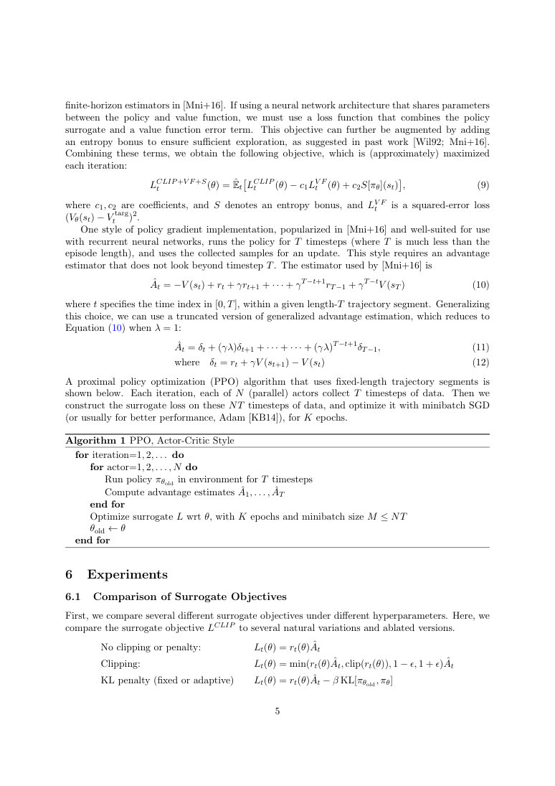
第 6 页Page 6PDF p.6
For the KL penalty, one can either use a fixed penalty coefficient \(\beta\) or an adaptive coefficient as described in Section 4 using target KL value \(d_{\mathrm{targ}}\). Note that we also tried clipping in log space, but found the performance to be no better.
对于 KL 惩罚，既可以使用固定的惩罚系数 \(\beta\)，也可以按照第 4 节所述，使用基于目标 KL 值 \(d_{\mathrm{targ}}\) 的自适应系数。需要指出的是，我们也尝试过在对数空间中进行裁剪，但发现性能并未改善。
Because we are searching over hyperparameters for each algorithm variant, we chose a computationally cheap benchmark to test the algorithms on. Namely, we used 7 simulated robotics tasks\({}^{2}\) implemented in OpenAI Gym [Bro+16], which use the MuJoCo [TET12] physics engine. We do one million timesteps of training on each one. Besides the hyperparameters used for clipping (\(\epsilon\)) and the KL penalty (\(\beta,d_{\mathrm{targ}}\)), which we search over, the other hyperparameters are provided in in Table 3.
由于我们要为每种算法变体搜索超参数，因此选择了一个计算开销较低的基准来测试这些算法。具体而言，我们使用了 OpenAI Gym [Bro+16] 中实现的 7 个机器人仿真任务\({}^{2}\)，这些任务采用 MuJoCo [TET12] 物理引擎。我们在每个任务上进行一百万个时间步的训练。除需要搜索的裁剪超参数（\(\epsilon\)）和 KL 惩罚超参数（\(\beta,d_{\mathrm{targ}}\)）外，其余超参数见表 3。
To represent the policy, we used a fully-connected MLP with two hidden layers of 64 units, and tanh nonlinearities, outputting the mean of a Gaussian distribution, with variable standard deviations, following [Sch+15b; Dua+16]. We don’t share parameters between the policy and value function (so coefficient \(c_1\) is irrelevant), and we don’t use an entropy bonus.
为了表示策略，我们遵循 [Sch+15b; Dua+16]，使用了一个全连接多层感知机（MLP），包含两个各有 64 个单元的隐藏层，采用 tanh 非线性激活函数，输出标准差可变的高斯分布的均值。策略与价值函数之间不共享参数（因此系数 \(c_1\) 无关紧要），且不使用熵奖励。
Each algorithm was run on all 7 environments, with 3 random seeds on each. We scored each run of the algorithm by computing the average total reward of the last 100 episodes. We shifted and scaled the scores for each environment so that the random policy gave a score of 0 and the best result was set to 1, and averaged over 21 runs to produce a single scalar for each algorithm setting.
每种算法都在全部 7 个环境中运行，并在每个环境中使用 3 个随机种子。我们通过计算最后 100 个回合的平均总奖励，为算法的每次运行评分。对于每个环境，我们对得分进行平移和缩放，使随机策略的得分为 0，最佳结果的得分为 1，然后对 21 次运行的得分取平均，为每种算法配置得到一个标量分数。
The results are shown in Table 1. Note that the score is negative for the setting without clipping or penalties, because for one environment (half cheetah) it leads to a very negative score, which is worse than the initial random policy.
结果见表 1。需要指出的是，不使用裁剪或惩罚的配置得分为负，这是因为在其中一个环境（half cheetah）中，该配置产生了一个很大的负分，表现比初始随机策略还差。
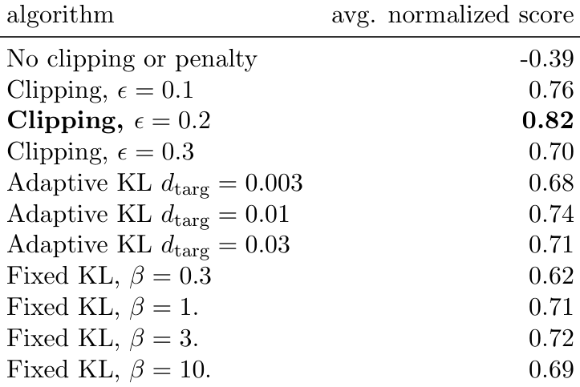
Table 1: Results from continuous control benchmark. Average normalized scores (over 21 runs of the algorithm, on 7 environments) for each algorithm / hyperparameter setting. \(\beta\) was initialized at 1.
表 1：连续控制基准的实验结果。每种算法／超参数配置的平均归一化得分（算法在 7 个环境中共运行 21 次）。\(\beta\) 的初始值设为 1。
6.2 Comparison to Other Algorithms in the Continuous Domain
6.2 连续域中与其他算法的比较
Next, we compare PPO (with the “clipped” surrogate objective from Section 3) to several other methods from the literature, which are considered to be effective for continuous problems. We compared against tuned implementations of the following algorithms: trust region policy optimization [Sch+15b], cross-entropy method (CEM) [SL06], vanilla policy gradient with adaptive stepsize\({}^{3}\),
接下来，我们将 PPO（采用第 3 节中的“裁剪”替代目标）与文献中被认为对连续问题有效的其他几种方法进行比较。我们用来比较的是以下算法经过调优的实现：信赖域策略优化 [Sch+15b]、交叉熵方法（CEM）[SL06]、采用自适应步长的普通策略梯度\({}^{3}\)，
\({}^{2}\)HalfCheetah, Hopper, InvertedDoublePendulum, InvertedPendulum, Reacher, Swimmer, and Walker2d, all “-v1”
\({}^{2}\)HalfCheetah、Hopper、InvertedDoublePendulum、InvertedPendulum、Reacher、Swimmer 和 Walker2d，均为“-v1”版本
\({}^{3}\)After each batch of data, the Adam stepsize is adjusted based on the KL divergence of the original and updated policy, using a rule similar to the one shown in Section 4. An implementation is available at https://github.com/berkeleydeeprlcourse/homework/tree/master/hw4.
\({}^{3}\)处理完每批数据后，根据原策略与更新后策略之间的 KL 散度，采用与第 4 节所示规则类似的规则调整 Adam 的步长。一个实现可见 https://github.com/berkeleydeeprlcourse/homework/tree/master/hw4。
展开第 6 页原版整页（含全部图表、公式与页眉页脚）
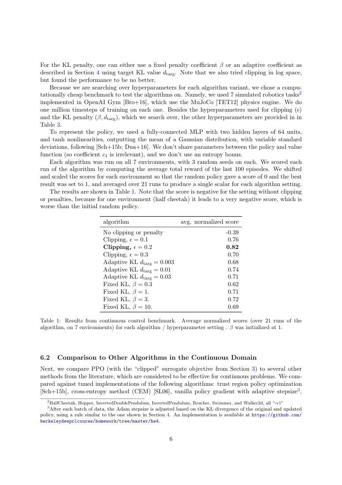
第 7 页Page 7PDF p.7
A2C [Mni+16], A2C with trust region [Wan+16]. A2C stands for advantage actor critic, and is a synchronous version of A3C, which we found to have the same or better performance than the asynchronous version. For PPO, we used the hyperparameters from the previous section, with \(\epsilon = 0.2\). We see that PPO outperforms the previous methods on almost all the continuous control environments.
A2C [Mni+16]、带信赖域的 A2C [Wan+16]。A2C 是优势演员–评论家（advantage actor critic）的缩写，是 A3C 的同步版本；我们发现，其性能与异步版本相当或更好。对于 PPO，我们采用上一节中的超参数，并设置 \(\epsilon = 0.2\)。可以看到，PPO 在几乎所有连续控制环境中的表现都优于此前的方法。
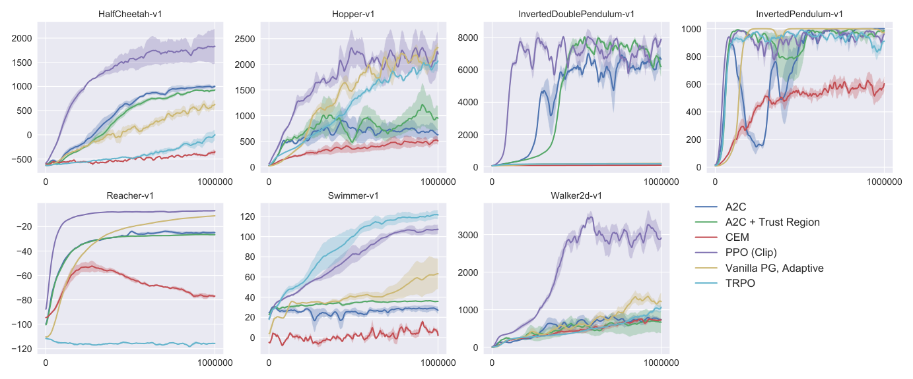
Figure 3: Comparison of several algorithms on several MuJoCo environments, training for one million timesteps.
图 3：若干算法在多个 MuJoCo 环境中的比较，训练时长为一百万个时间步。
6.3 Showcase in the Continuous Domain: Humanoid Running and Steering
6.3 连续领域中的应用展示：人形机器人的奔跑与转向
To showcase the performance of PPO on high-dimensional continuous control problems, we train on a set of problems involving a 3D humanoid, where the robot must run, steer, and get up off the ground, possibly while being pelted by cubes. The three tasks we test on are (1) RoboschoolHumanoid: forward locomotion only, (2) RoboschoolHumanoidFlagrun: position of target is randomly varied every 200 timesteps or whenever the goal is reached, (3) RoboschoolHumanoidFlagrunHarder, where the robot is pelted by cubes and needs to get up off the ground. See Figure 5 for still frames of a learned policy, and Figure 4 for learning curves on the three tasks. Hyperparameters are provided in Table 4. In concurrent work, Heess et al. [Hee+17] used the adaptive KL variant of PPO (Section 4) to learn locomotion policies for 3D robots.
为展示 PPO 在高维连续控制问题上的性能，我们在一组涉及三维人形机器人的问题上进行训练。在这些问题中，机器人必须奔跑、转向以及从地面起身，同时还可能受到投掷而来的立方体的撞击。我们测试了三个任务：(1) RoboschoolHumanoid：仅需向前运动；(2) RoboschoolHumanoidFlagrun：每隔 200 个时间步或每当到达目标时，随机改变目标的位置；(3) RoboschoolHumanoidFlagrunHarder：机器人受到投掷而来的立方体的撞击，并且需要从地面起身。学习所得策略的静态画面见图 5，三个任务上的学习曲线见图 4。超参数列于表 4。在同期工作中，Heess 等人 [Hee+17] 使用 PPO 的自适应 KL 变体（第 4 节）来学习三维机器人的运动策略。
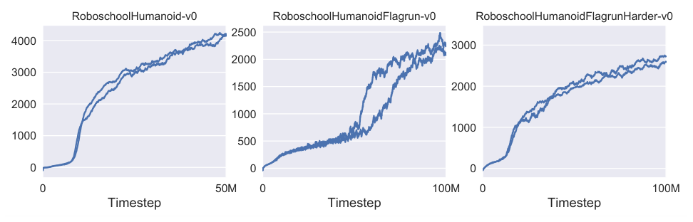
Figure 4: Learning curves from PPO on 3D humanoid control tasks, using Roboschool.
图 4：使用 Roboschool 时，PPO 在三维人形机器人控制任务上的学习曲线。
展开第 7 页原版整页（含全部图表、公式与页眉页脚）
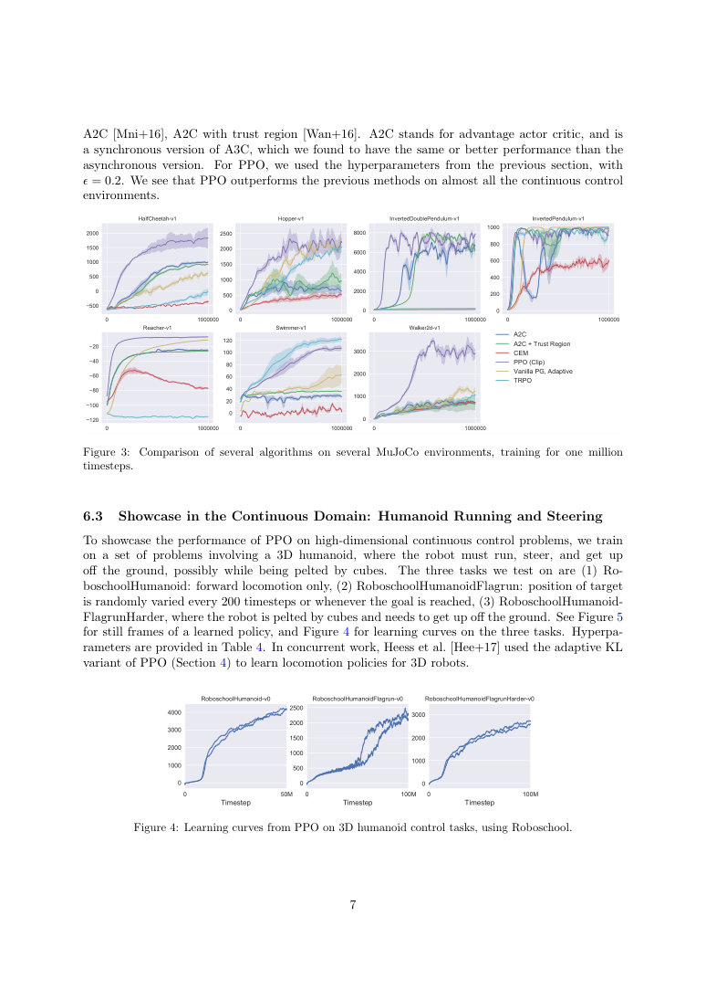
第 8 页Page 8PDF p.8

Figure 5: Still frames of the policy learned from RoboschoolHumanoidFlagrun. In the first six frames, the robot runs towards a target. Then the position is randomly changed, and the robot turns and runs toward the new target.
图 5：在 RoboschoolHumanoidFlagrun 中学习所得策略的静态画面。在前六帧中，机器人朝一个目标奔跑。随后，目标位置被随机改变，机器人转向并朝新的目标奔跑。
6.4 Comparison to Other Algorithms on the Atari Domain
6.4 在 Atari 领域中与其他算法的比较
We also ran PPO on the Arcade Learning Environment [Bel+15] benchmark and compared against well-tuned implementations of A2C [Mni+16] and ACER [Wan+16]. For all three algorithms, we used the same policy network architecture as used in [Mni+16]. The hyperparameters for PPO are provided in Table 5. For the other two algorithms, we used hyperparameters that were tuned to maximize performance on this benchmark.
我们还在 Arcade Learning Environment [Bel+15] 基准上运行了 PPO，并将其与经过充分调优的 A2C [Mni+16] 和 ACER [Wan+16] 实现进行比较。对于这三种算法，我们均采用与 [Mni+16] 相同的策略网络架构。PPO 的超参数列于表 5。对于另外两种算法，我们使用经过调优、以最大化其在该基准上的性能的超参数。
A table of results and learning curves for all 49 games is provided in Appendix B. We consider the following two scoring metrics: (1) average reward per episode over entire training period (which favors fast learning), and (2) average reward per episode over last 100 episodes of training (which favors final performance). Table 2 shows the number of games “won” by each algorithm, where we compute the victor by averaging the scoring metric across three trials.
附录 B 提供了全部 49 个游戏的结果表和学习曲线。我们考虑以下两种评分指标：(1) 整个训练期间的每回合平均奖励（该指标偏重学习速度）；(2) 训练最后 100 个回合的每回合平均奖励（该指标偏重最终性能）。表 2 展示了各算法“获胜”的游戏数量，其中，我们对三次试验的评分指标取平均，以确定获胜者。
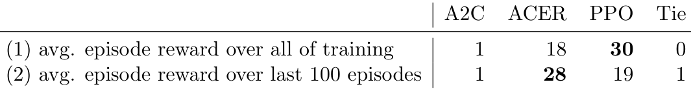
Table 2: Number of games “won” by each algorithm, where the scoring metric is averaged across three trials.
表 2：各算法“获胜”的游戏数量，评分指标取三次试验的平均值。
7 Conclusion
7 结论
We have introduced proximal policy optimization, a family of policy optimization methods that use multiple epochs of stochastic gradient ascent to perform each policy update. These methods have the stability and reliability of trust-region methods but are much simpler to implement, requiring only few lines of code change to a vanilla policy gradient implementation, applicable in more general settings (for example, when using a joint architecture for the policy and value function), and have better overall performance.
我们介绍了近端策略优化，这是一类通过多轮随机梯度上升来执行每次策略更新的策略优化方法。这些方法具有信赖域方法的稳定性和可靠性，但实现起来简单得多，只需对基本策略梯度方法的实现修改几行代码即可；它们适用于更一般的设置（例如，为策略和价值函数使用联合架构时），并且具有更好的整体性能。
8 Acknowledgements
8 致谢
Thanks to Rocky Duan, Peter Chen, and others at OpenAI for insightful comments.
感谢 OpenAI 的 Rocky Duan、Peter Chen 及其他同事提出的富有洞见的意见。
展开第 8 页原版整页（含全部图表、公式与页眉页脚）
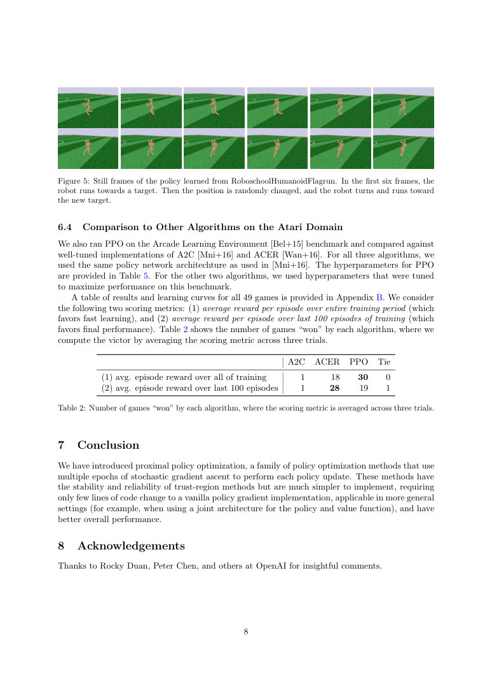
第 9 页Page 9PDF p.9
References
参考文献
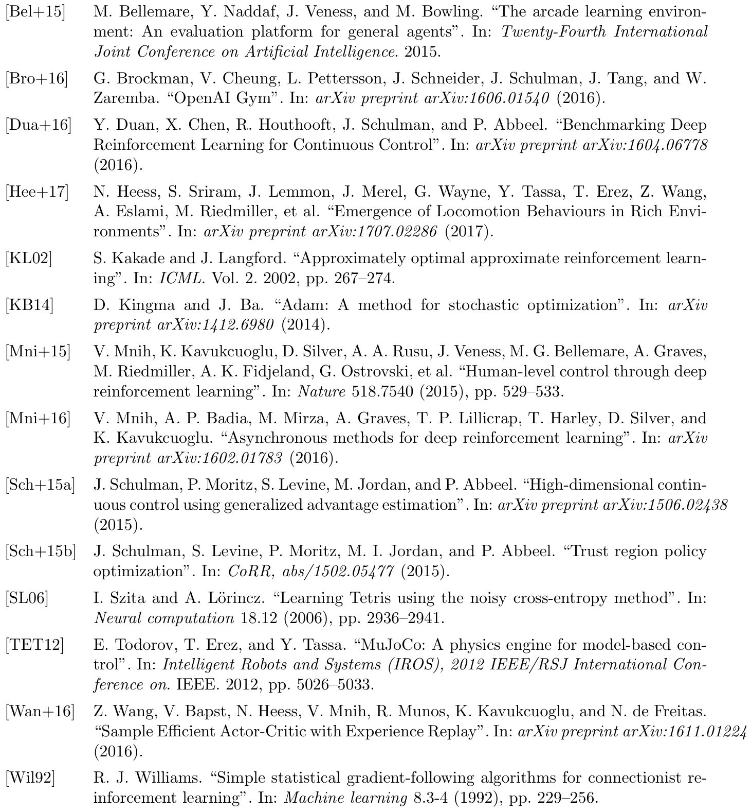
展开第 9 页原版整页（含全部图表、公式与页眉页脚）
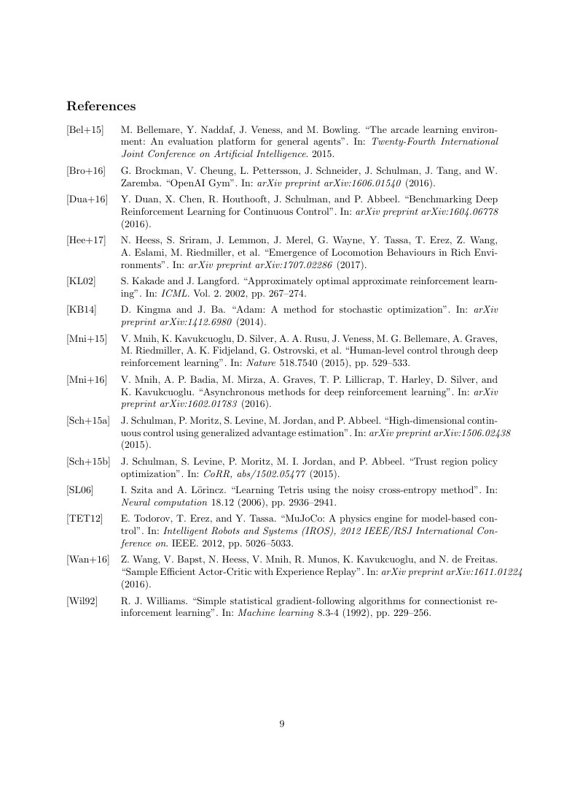
第 10 页Page 10PDF p.10
A Hyperparameters
A 超参数
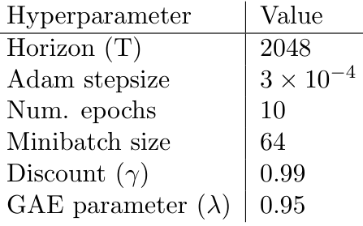
Table 3: PPO hyperparameters used for the Mujoco 1 million timestep benchmark.
表 3：用于 Mujoco 100 万时间步基准测试的 PPO 超参数。
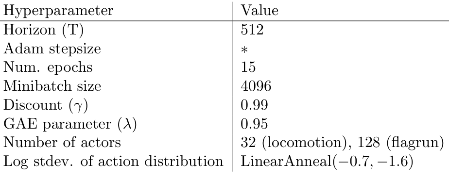
Table 4: PPO hyperparameters used for the Roboschool experiments. Adam stepsize was adjusted based on the target value of the KL divergence.
表 4：用于 Roboschool 实验的 PPO 超参数。Adam 步长根据 KL 散度的目标值进行调整。
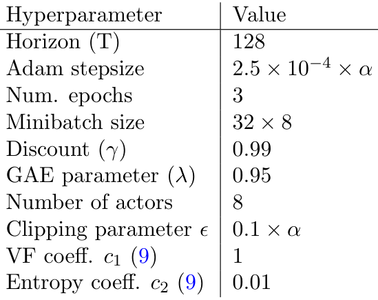
Table 5: PPO hyperparameters used in Atari experiments. \(\alpha\) is linearly annealed from 1 to 0 over the course of learning.
表 5：Atari 实验中使用的 PPO 超参数。在学习过程中，\(\alpha\) 从 1 线性退火至 0。
B Performance on More Atari Games
B 在更多 Atari 游戏上的性能
Here we include a comparison of PPO against A2C on a larger collection of 49 Atari games. Figure 6 shows the learning curves of each of three random seeds, while Table 6 shows the mean performance.
这里，我们在一个包含 49 款 Atari 游戏的更大游戏集合上比较 PPO 与 A2C。图 6 展示了三个随机种子各自对应的学习曲线，表 6 则展示了平均性能。
展开第 10 页原版整页（含全部图表、公式与页眉页脚）
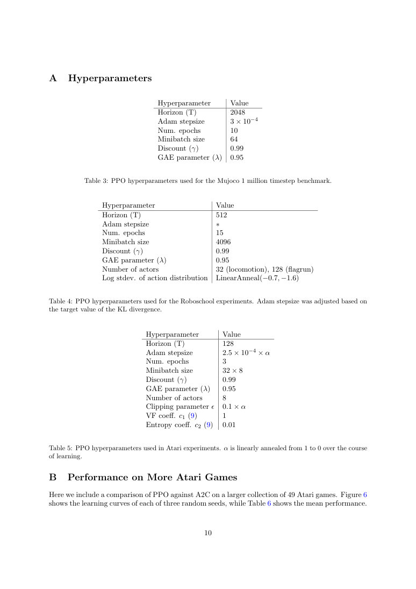
第 11 页Page 11PDF p.11
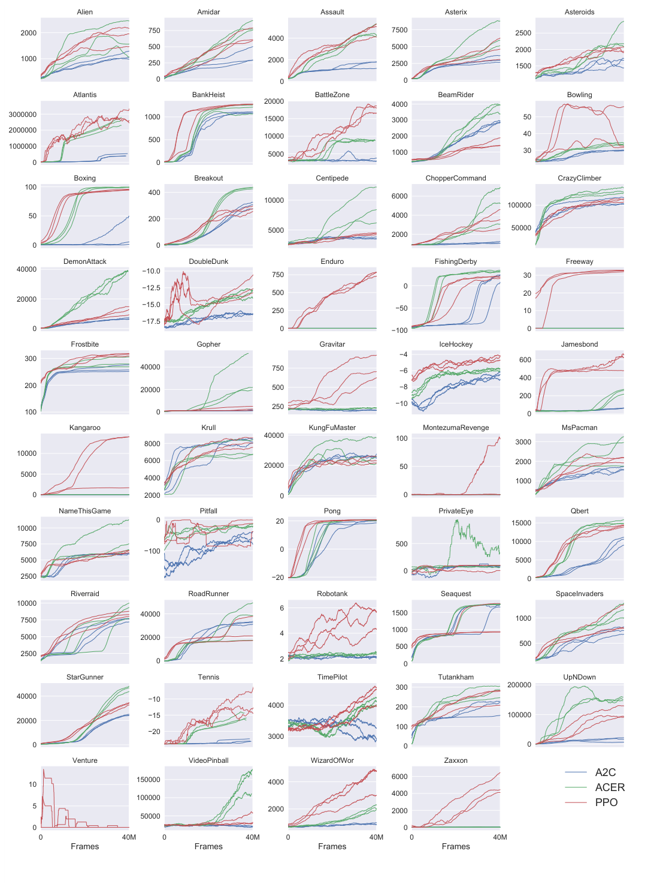
Figure 6: Comparison of PPO and A2C on all 49 ATARI games included in OpenAI Gym at the time of publication.
图 6：PPO 与 A2C 在本文发表时 OpenAI Gym 所包含的全部 49 款 ATARI 游戏上的比较。
展开第 11 页原版整页（含全部图表、公式与页眉页脚）
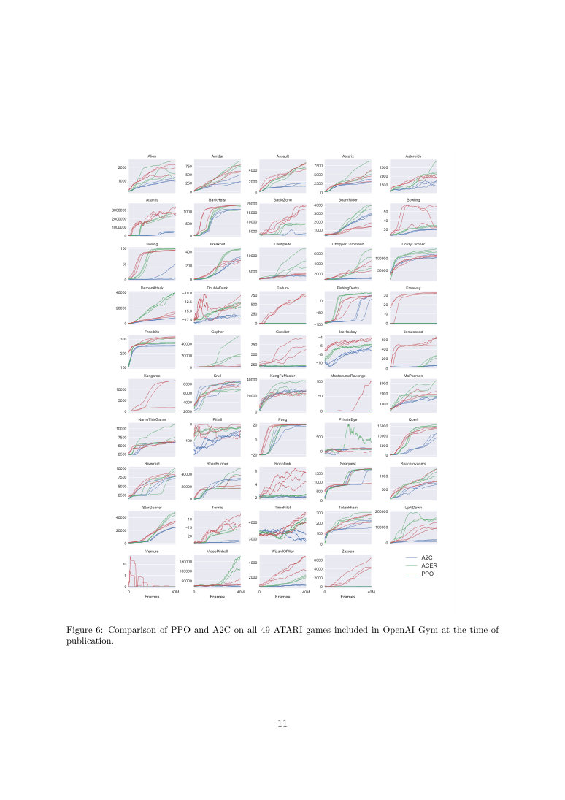
第 12 页Page 12PDF p.12
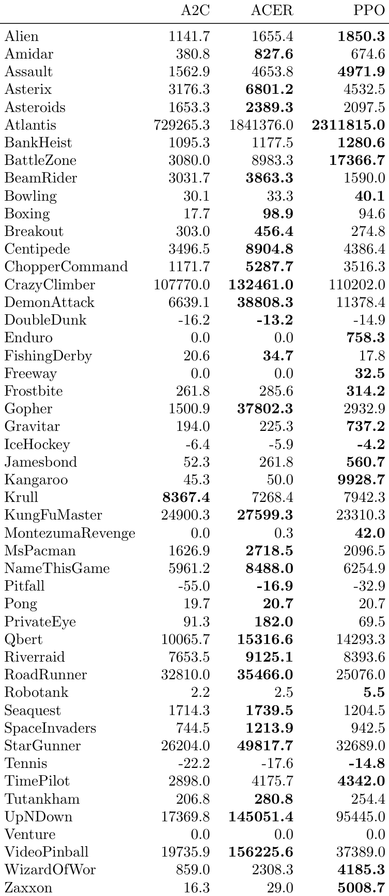
Table 6: Mean final scores (last 100 episodes) of PPO and A2C on Atari games after 40M game frames (10M timesteps).
表 6：PPO 与 A2C 在 Atari 游戏中经过 40M 个游戏帧（10M 个时间步）后的最终平均得分（最后 100 个回合）。
展开第 12 页原版整页（含全部图表、公式与页眉页脚）
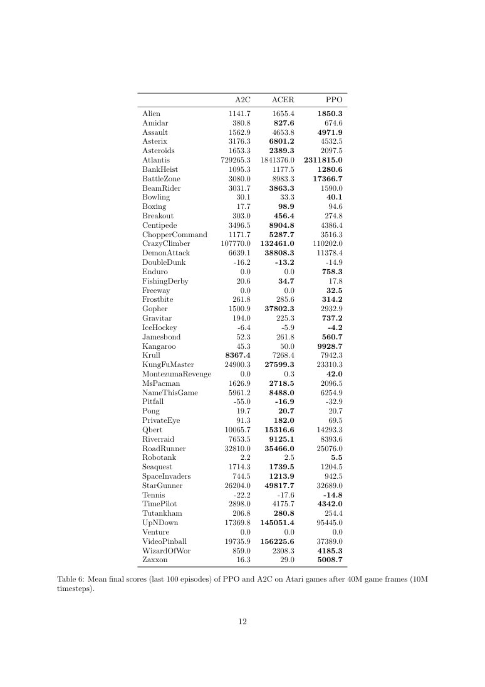